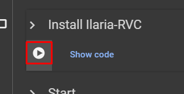
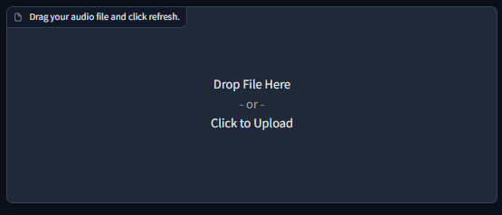

#
Ilaria RVC
Last update: Mar 8, 2024
#
#
Introduction
Ilaria RVC is a port of EasyGUI (Mangio) to Google Colab. Made by Ilaria.
Works for inferencing only, has a pretty UI, huge speed, & the great tools that Mangio has (such as Mangio-Crepe algorithm).
And for this it's considered one of the best alternatives for doing inference through the cloud.
#
Pros & Cons
The pros & cons are subjective to your necessities.
- Model download through links.
- Two extra TTS tools.
- Great UI.
- Has Mangio-Crepe.
- Doesn't take too long to load.
- Very quick.
- Usage limit for free users.
- Takes 3 minutes to set up.
#
#
#
1. Enter the space.
First log in to your Google account here.
Then access the Colab space.
#
#
2. Set up space.
Execute the
Install Ilaria-RVCcell, by pressing the play button, thenRun anyway.Ilaria RVC will begin to set up.

It'll finish when the cell says
Done Cloning Repo.
If red text appears showing errors, ignore it, it's normal.
#
#
3. Open Gradio.
Now execute the
Startcell below.After a bit it's going to show you two links. Open the gradio.live one in a separate tab.

Don't close the Colab tab until you're done using Ilaria RVC.
Otherwise you'll have to start again.
#
#
4. Download voice model.
In the Gradio, go to the
Download Voice Modelstab.Paste the link of the model in the
Hugging Face Linkbar. It must be a public link from either Hugging Face/Google Drive.In
Name of the model, insert a name for it. Don't include spaces/special characters.Then click
Download.
#
#
5. Select model.
Return to the
Inferencetab & click the upper pinkRefreshbutton.Unfold the
Choose the modeldropdown & select your model.
#
#
6. Select your audio.
Below it, in
Drag your audio file and click refresh, click it to load your audio manually. Or just drag the file into it.
#
#
7. Adjust settings. (optional)
If you wish, you can modify the inference settings in
Index Settings&Advanced Optionsfor better results.
Tap them to unfold.
#
#
8. Convert.
Click the upper
Convertbutton & wait for the inference to finish.
#
#
9. Download output.
Once it's done processing, there will be a playable audio in the
Final Result!box.Tap the three buttons on the right of the audio and then
Download.
-
-
#
TTS
#
and with an RVC model
#
- First access the Gradio. If you don't know how, follow the first three steps of the previous chapter.
Go to the
IlariaTTSsection.
If you want, you can use the other
ElevenLabs / Google TTS.
In
Voicepick a voice of the gender, language & accent that you wish. Under it, insert the text.If you're going to use an RVC model, pick one that sounds similar to it.
- Press
Speak. The TTS will begin to process.
Once it's done processing, there will be a playable audio in the
Final Result!box.
At the right press the three dots & thenDownload.
- To use an RVC model, simply upload the output to Ilaria RVC & convert it using your model. (Optional)
If you don't know, learn here.
#
#
#
Troubleshooting
#
Error message.
#
- It's normal. Try repeating your action.
- If it persists, reload the Gradio page.
- Ensure your audio is selected in the
Choose the audio file. If it's not in the list, clickRefreshon its right & select it.
- If it's still persisting, restart the Colab space:
- Go to the Colab space and press the downward arrow ( ) at the top.
- Click
Disconnect and delete all data. - Reload the page and load RVC again.
#
- You'll have to create the link yourself. Learn how here.
#
This could be due to a few reasons:
- Link is private:
- If it's from GD, ensure the
General accessis set asAnyone with the link. - If it's from HF, ensure the repo is set as
Public. Learn more here.
- If it's from GD, ensure the
- Invalid HF link:
- The HF link must contain the word ".zip".
- If it contains the word
blob, replace it forresolve& paste it.
- Incorrect files:
- The model must be zipped in a .ZIP file. Not .RAR or .7ZIP.
- It must contain its correct .PTH & .INDEX files. Learn more here.
- Link is private:
#
- This is an anomaly called "artifacting". Learn how to fix it here.
#
- You have exhausted the GPU runtime of Colab.
#
- Report your issue here.